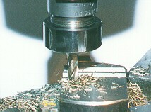

OBJETIVOS
Fresas de topo de aço rápido são amplamente utilizadas
na indústria metal-mecânica. Estas ferramentas têm uma
enorme versatilidade e possibilitam a execução de uma série
ampla de operações de fresamento. Canais, rasgos de chaveta,
perfis e cavidades são alguns dos exemplos de operações
executadas com fresas de topo. Sua grande utilização está também
relacionada à grande facilidade de aquisição, baixo
custo e fácil reafiação.
Este trabalho tem como objetivo principal levantar informações
básicas sobre o comportamento deste tipo de ferramenta em processo.
Dentre estas informações pode-se citar os esforços produzidos
na abertura de canais, o comportamento das forças, as formas e a evolução
do desgaste e a influência dos parâmetros de entrada do processo
(geometria da ferramenta, velocidade de corte, avanço, profundidade
de corte, penetração de trabalho, fluido de corte, etc).
PROCEDIMENTOS
O processo de obtenção de informações básicas
sobre a utilização de fresas de topo tem como etapa inicial
uma revisão bibliográfica sobre o assunto em publicações
especializadas nacionais e internacionais. Esta pesquisa formará um
banco de dados com informações do estado da arte deste tipo
de processo.
Na continuidade do trabalho serão planejados e executados ensaios
de usinagem que irão ter como objetivos a confirmação
de aspectos já conhecidos ou a busca de novas informações
e comportamentos. Para tanto tem-se à disposição diversos
equipamentos dentre os quais pode-se citar: fresadora comandada numericamente,
plataforma piezelétrica para medição de forças,
um completo sistema de aquisição de sinais, equipamentos
de medição e avaliação de resultados e uma
ampla estrutura de apoio computacional.
RESULTADOS
Os resultados que são esperados serão úteis para
que o complexo processo de fabricação por fresamento seja
conhecido de maneira menos empírica e com maior fundamento científico.
Espera-se também que esta pesquisa seja o início e a base
de futuros desenvolvimentos na área de fresamento e obtenção
de cavidades.

Início da usinagem
Ensaio de força

Execução
de canais
Ensaio de desgaste
|